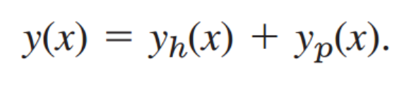
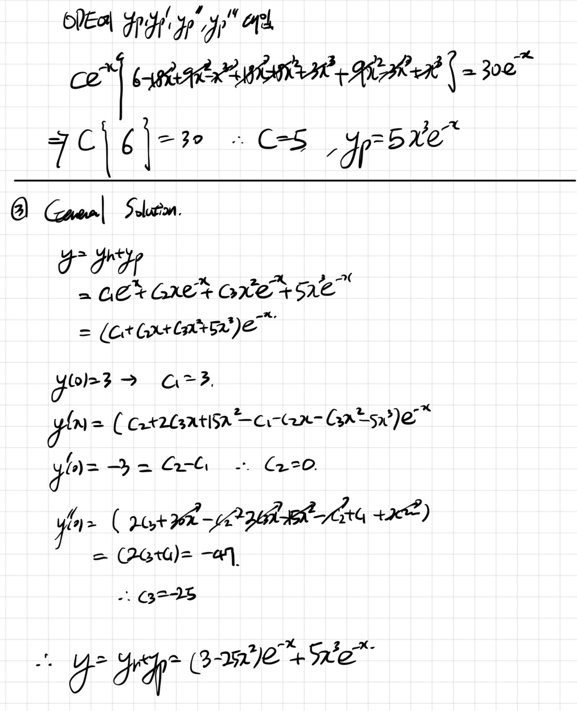

[Engineering Mathematics] Ch 3. Higher-order Linear ODE
이제 1,2차 아닌 n차인 경우.
이렇게 N th order 인 Linear Homogeneous ODE를 정의 할 수 있다.
![[Engineering Mathematics] Ch 3. Higher-order Linear ODE](./images/img-001.png)
그리고 Genearl solution은 n개의 solution의 합으로 나타낼 수 있다.
![[Engineering Mathematics] Ch 3. Higher-order Linear ODE](./images/img-002.png)
여기서 전 2차에서 언급한대로, y1,y2,y2 ... yn은 모두 linearly independent 해야만 한다.
확인하는 방법은???
Wronskian
![[Engineering Mathematics] Ch 3. Higher-order Linear ODE](./images/img-003.png)
![[Engineering Mathematics] Ch 3. Higher-order Linear ODE](./images/img-004.png)
W가 0 이 아닌 y1,y2,y3,...yn이 존재한다면 그렇다면, Linearly independent하다는 말이다.
자 이제 해를 구해보자. 먼저, 쉬운 경우 부터 살펴보자.
y항의 계수가 모두 상수인 경우이다.
![[Engineering Mathematics] Ch 3. Higher-order Linear ODE](./images/img-005.png)
y = e^(
λx) 로 가정하면,
![[Engineering Mathematics] Ch 3. Higher-order Linear ODE](./images/img-006.png)
여기서, 경우를 나누어 주어야 한다.
1. 모두 서로 다른 실근 인 경우
![[Engineering Mathematics] Ch 3. Higher-order Linear ODE](./images/img-007.png)
![[Engineering Mathematics] Ch 3. Higher-order Linear ODE](./images/img-008.png)
2. 실근인 중근이 있을 경우,
![[Engineering Mathematics] Ch 3. Higher-order Linear ODE](./images/img-009.png)
3. 허근일 경우
(λ = r + iw)
![[Engineering Mathematics] Ch 3. Higher-order Linear ODE](./images/img-010.png)
4. 중첩되는 허근이 있을 경우
![[Engineering Mathematics] Ch 3. Higher-order Linear ODE](./images/img-011.png)
Example)
![[Engineering Mathematics] Ch 3. Higher-order Linear ODE](./images/img-012.png)
![[Engineering Mathematics] Ch 3. Higher-order Linear ODE](./images/img-013.jpg)
즉, 이렇게 실근과 허근이 공존 할 수 있다.
이제, Non-homogeneous 인 경우를 살펴보자.
![[Engineering Mathematics] Ch 3. Higher-order Linear ODE](./images/img-014.png)
2차와 마찬가지로 두가지 방법이 있다.
1. Method of Undetermined Coefficeints
(Homogeneous의 해 yh(x), particular solution yp(x)의 합으로 나타내기)

yp(x)를 구하는 방법은 다음과 같다.
![[Engineering Mathematics] Ch 3. Higher-order Linear ODE](./images/img-016.png)
![[Engineering Mathematics] Ch 3. Higher-order Linear ODE](./images/img-017.png)
Rule (A) r(x)의 함수 형태를 보고, 표를 통해 yp(x)를 예측 하는 것이다.
Rule (B) 하지만 구한 yp(x)가 만약에 Homogeneous solution yh(x)안에 들어있다면??
y1,y2,y3...yn에 포함 되어있다면, x^k 를 곱하라는 의미이다.
Rule (C) y = yh + yp 가 최종 General Solution이라는 의미.
언제나 그렇듯이, 문제를 풀어야 이해가 쉽다...
Example)
![[Engineering Mathematics] Ch 3. Higher-order Linear ODE](./images/img-018.png)
![[Engineering Mathematics] Ch 3. Higher-order Linear ODE](./images/img-019.jpg)

2. Method of Variation of Parameters
이전 방법의 단점은 2차ODE에서 언급 한것과 마찬가지로,
Table에 없는 R(X)의 경우에는 yp를 구할 수 없다는 것.
따라서, General 방법은 다음과 같다. (증명은 2차와 동일하므로 생략)
![[Engineering Mathematics] Ch 3. Higher-order Linear ODE](./images/img-021.png)
W는 Wronskian으로 다음과 같고,
여기서 새롭게 정의된, W1(x) , W2(x),.... Wn(X)는
Wj(x)는 W(x)에서, j번째 column이
I
인 것을 의미한다.
Example) n = 2인 경우
![[Engineering Mathematics] Ch 3. Higher-order Linear ODE](./images/img-022.png)
예제문제로 감을 잡아보자,
![[Engineering Mathematics] Ch 3. Higher-order Linear ODE](./images/img-023.png)
![[Engineering Mathematics] Ch 3. Higher-order Linear ODE](./images/img-024.jpg)
![[Engineering Mathematics] Ch 3. Higher-order Linear ODE](./images/img-025.jpg)